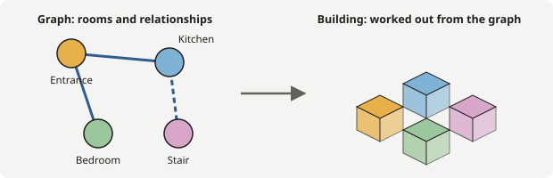

Page 2 of 15 · In the browser
About the app
Spatial Graph Lab runs in your browser: nothing to install. Open a section to read more.
01What it is
A graph of rooms that becomes a building.
What it is
A graph of rooms that becomes a building.
You draw nodes (rooms) and edges (relationships between rooms). The app works out the building from that graph and shows the same design as a 2D diagram, a 3D graph, a plan, a data table and generated architecture.

02Where it is
One address, in any modern browser.
Where it is
One address, in any modern browser.
https://spatial-graph-lab.vercel.app/ in Chrome, Edge, Firefox or Safari, on a laptop.
The same app on your own computer (Exercise 2)
For your own toolkit you run the app on your computer, from your copy of the course repository (About the repository). It is the same app with your toolkit added.
03What you can do there
Use it, analyse, transform, and upload your own.
What you can do there
Use it, analyse, transform, and upload your own.
- Use it: draw rooms and relationships, give them Functions and attributes (page 03).
- Analyse: an analysis reads your design and shows an answer.
- Transform: a transform proposes changes; you preview them and Apply.
- Upload your own analysis (page 04) or transform (Exercise 1), written with an AI chat.
04Your work is a project file
Export it after every session.
Your work is a project file
Export it after every session.
Export after every session. A project lives only in this browser on this computer. Project › Export project gives you a .project.json file that you can keep and open anywhere.
More: saving and opening
Save locally keeps it in this browser; Open project opens an exported file on any computer. The file holds every scenario and every analysis and transform you uploaded. Details: Use the app › Keep your work.